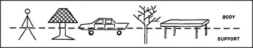
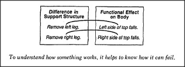

What can we do when we can't solve a problem? We can try to find a new way to look at it, to describe it in different terms. Reformulation is the most powerful way to attempt to escape from what seems to be a hopeless situation. Thus, when we couldn't find anything common to all those different kinds of arches, we changed our way of looking at them. We moved from the world of rigid, geometric block descriptions to a less constrained domain of body-support descriptions — and there we found a way to make a uniframe for all of them: a span supported by a pair of legs. But think of all the other ways a person might describe an arch.
Aesthetic: A pleasing, shapely form. Dynamical: The top will fall if either leg is removed. Topological: The arch surrounds a hole in space. Geometrical: The three blocks form an inverted U shape. Architectural: The arch's top could be the base of something else.
Constructional: Place two blocks, then place another across their tops. Circumventional: Can be used as a detour, to go around an obstacle. Transportational: Can be used as a bridge, to go from one place to another.
Each of these involves a different realm of thought with its own style for describing things. And every different realm of thought can bring new kinds of skills to bear on a problem. We each learn various ways to reason about paths and obstacles; we each learn ways to deal with vertical support; with doors and windows; with boxes and bridges and tunnels; with stacks and rows and stairs and ramps.
To an outsider, it may seem that a creative inventor (or designer or thinker) must possess an endless source of novel ways to deal with things. Yet inside the inventor's mind, that all might stem from variations on far fewer themes. Indeed, in that inventor's view, those styles of thought may seem so clear (and those inventions all so similar) that the question turns the other way: Why can't outsiders understand how to think about these simple kinds of problems? In the long run, the most productive kinds of thought are not the methods with which we solve particular problems, but those that lead us to formulating useful new kinds of descriptions.
How do we reformulate? Each new technique presumably begins by exploiting methods already learned in other, older agencies. So new ideas often have roots in older ones, adapted for new purposes. In the next section, we'll see how that body-support idea has counterparts in virtually every realm of thought. Toward the end of this book, we'll speculate about how those various realms themselves evolve inside the mind.
We were able to uniframe many kinds of arches by dividing each into a Body and a Support. See how well that technique works on many other sorts of things.
What makes such simple cuts seem meaningful? It is because we can imagine purposes for each. In everyday life, there is a special significance to dividing a table into top and legs. This is because the tabletop serves our principal use for a table, as thing to put things on. The table's legs serve only secondary purposes: without those legs, the top would fall — but without its top, the table has no use at all. And it would make no sense to imagine dividing that table in half, vertically, to see it as two stuck-together, L-shaped parts.
This must be one reason why the body-support idea seems so universal. It is not merely a matter of physical support: the more profound idea is that of building a mental bridge between a thing and a purpose. This is why bridge-definitions are so useful: they help us connect structural descriptions to psychological goals. But the point is that it is not enough just to link together descriptions from two different worlds — top supported by legs and thing to put things on. It is not enough simply to know that tables keep things off the floor. To use that knowledge, we must also know how it is done: that things have to be put on the table, rather than, for example, between the table's legs.
This is where the body-support representation helps us to classify our knowledge. The body represents those parts of a structure that serve as the direct instrument for reaching the goals and the support represents all the other features that merely serve that instrument. Once we can classify the tabletop as the body of the table, we will tend to think only of using the tabletop for keeping things off the floor. Of course, we would gain even more power by understanding how those supports assist the body's goal; that is, by understanding that the table's legs are for keeping the tabletop itself away from the floor. A good way to understand that is to have a representation of what might happen if one of the table's legs failed to perform its function.
To understand how something works, it helps to know how it can fail.